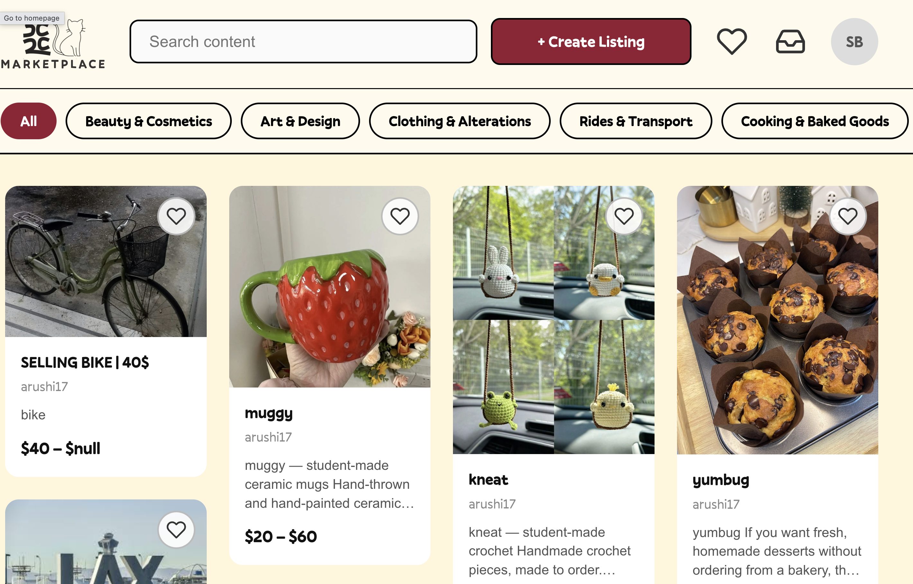

5C2C

5C2C is a campus marketplace for the Claremont College Consortium where students can post services, get discovered, and get paid. Nail art, graphic design, music production, hair styling, henna, rides, all in one place instead of scattered across Instagram DMs and group chats. Currently live and in use on campus.
What It Does
Students can create a shop, upload photos of their work, set prices, and manage availability. Buyers browse a card-based feed, filter by category, book appointments, and message sellers directly. Features include:
- Browse and search services with category filters (nails, design, rides, etc.)
- Seller profile pages with portfolio photos, pricing, and average ratings
- "Create Listing" flow with image upload to Supabase Storage
- Booking system where you pick a service, select a time, and confirm details
- Reviews and ratings displayed on listings and profiles
- Real-time messaging via Socket.io with unread message indicators
- .edu email verification so the marketplace stays within the 5C community
My Role
I worked on the frontend. The project runs on a React.js + Tailwind CSS stack, with a Node.js/Express backend and Supabase handling auth, database (PostgreSQL), and file storage. My contributions included:
- Browse/search page, listing cards, and individual listing detail pages
- Category filters, search bar, and the Instagram-style grid layout for service browsing
- Seller profile pages (portfolio, bio, ratings display) and the buyer-facing booking flow
- "Create Listing" and "My Listings" management pages, including image upload connected to Supabase Storage
- Chat interface integrated with the Socket.io real-time layer
- Protected routes and navigation
- Connecting frontend components to the backend REST APIs
Co-managed by Arushi Bhandari and Vanisha Kheterpal (both Harvey Mudd '29), built by a team of 5–7 students over a 10-week sprint.
Through this project I learned and practiced:
- React.js and state management across a multi-page application
- Tailwind CSS for responsive UI design
- Connecting a React frontend to a Node.js/Express REST API
- Supabase Storage for user-uploaded images
- Real-time chat UI with Socket.io
- Marketplace UI patterns: listing cards, filters, booking flows, profile pages
- Working on a shared codebase with a bigger team, which was a fun change of pace